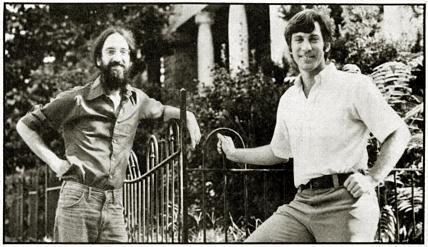
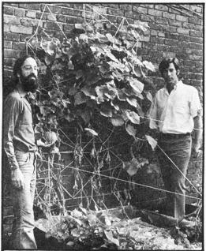
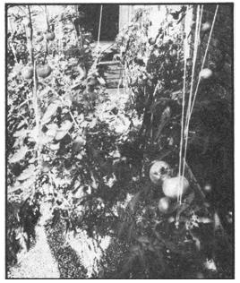

Gil Friend And David Morris Of The Institute For Local Self-Reliance
A Plowboy Interview with the founders of the Washington, D.C. organization, The Institute for Local Self-Reliance.
By the Mother Earth News editors
November/December 1975
In 1973-while food and fuel prices were going up, the employment rate was going down, and the quality of life in all our urban centers was generally deteriorating-a small miracle occurred in Washington, D. C.
Not in the White House. Not on Capitol Hill. And not in the red-tape-strewn offices of any bureaucratic agency set up to "save the people".
Nope. This miracle took place a couple of miles northwest of the center of the city . . . in the run-down, high crime, "little hope left" Adams-Morgan area. And it all began when some of "the people" (whom both our establishment politicians and chic radicals presume to save) decided to save themselves.
One of the main tools used by the Adams-Morgan residents in their fight for self-respect and self-sufficiency was-and still is something called the Institute for Local Self-Reliance. This is a non-profit, tax-deductible foundation set up to research, develop, and help establish politically independent, economically self-sustaining, and ecologically sound urban communities. Communities ruled from the bottom up by the individuals and families who live in them . . . rather than from the top down by distant bureaucrats who "know what's best"
The ILSR's work has-so far-included experiments with imaginative new ways to produce, process, and distribute food right in urbanneighborhoods . . . the design of low-environmental-impact waste recycling systems. . . the promotion of solar energy for do-it-yourself city use. . . the organization of creative community government on a grassroots level . . . and the publication of a wide variety of "how-to" material about the foregoing projects. Members of the Institute have also done a good deal of intellectual arm-twisting on the "powers that be" in behalf of self-reliant, sub-municipal, people-oriented government.
Two of the individuals who belong to the Institute for Local Self-Reliance-David Morris and Gil Friend-can probably speak for the whole group as well as any of tit organization's members.
David (29) is an infectious extrovert with a lightning-quick mind who grew up in New York City and studied labor economics at Cornell University. After serving with tire Institute for Policy Studies in Washington during the late 60's (where he concentrated on the United States' role in Latin American development), Morris moved to Chile and set up a news service. While in that South American country, he wrote a book- We Must Make Haste Slowly: The Process of Revolution in Chile- about Salvadore Allende's government... which was published by Random House three months before the coup which cost Allende his life.
After returning to Washington in 1971, Morris became involved in Adams-Morgan neighborhood development activities as a faculty member of the University Without Walls Program at Roger Williams College. This brought him into contact with a number of other young community innovators, including Gil Friend.
Gil (23)-a soft-spoken, tranquil person of obvious intellectual depth-is, like David, a native of New York City. He entered the City College of New York expecting to major in physics . . . but came out with a degree in English. Friend then moved to Washington, where he spent a year driving cabs and cooking in a natural foods restaurant.
The latter job aroused Gil's interest in nutrition and food production and led him to spend a summer working with Buckminster Fuller's World Game Workshop in Carbondale, Illinois. As a result of that experience, Friend eventually joined David Morris, Bill Batko, and Neil Seidman in the formation of the Institute for Local Self-Reliance.
The organization's headquarters are located in one of the Adams-Morgan turn-of-the-century townhouses which-with slightly newer red brick apartment buildings-are tightly packed into the community. The neighborhood is racially, ethnically, and economically mixed and-but for the pride and spirit of its people-would be as seedy and oppressive as hundreds of similar areas in scores of big cities across the United States.
Anson Mount interviewed David Morris and Gil Friend in the ILSR's living room on a pleasant afternoon during early autumn . . . while sunlight streamed in through bay windows and the room was washed with laughter from local children as they joked with police guards stationed at the Russian news agency across the street.
PLOWBOY: David . . . Gil . . . what led you two-along with Bill Batko and Neil Seldman-to form the Institute for Local Self-Reliance?
MORRIS: For me, the most important thing was my experience in Chile. I learned an enormous amount in that country and came back to the U.S. all fired up with enthusiasm about the kinds of creativity that can occur on local levels. Then I really became inspired when I saw the success of some of the innovative neighborhood cooperative projects here in Adams-Morgan.
For example, about three years ago some of our neighbors began organizing retail food stores-not as consumer cooperatives, which exist in many other cities around the country-but as worker collectives. The difference is that the people who work in our stores, own them.
Then several of these collectives joined together to set up warehousing operations, a trucking distribution network, and processing plants . . . and some of us began to get the feeling that this could be extended even further. That is-if we could somehow control the flow of money within the neighborhood, if we could somehow move into light manufacturing, and if we could somehow produce a significant amount of our food and energy right here in the community-then we could greatly improve the quality of local life and greatly reduce our dependence on the outside world.
FRIEND: In my case, it was the summer I spent at Bucky Fuller's World Game Workshop that led me here. The World Game gave me a comprehensive look at the nature of the food and energy, transportation, communications, education, and other problems we now face on a planetary scale.
The central theory of Fuller's approach is that all these problems are connected together . . . and that if we'll just look at the whole picture all at once, instead of trying to solve each problem by itself, we'll have a better idea about how to make this the kind of world we'd like to live in twenty or thirty years from now.
And, you know . . . no matter how big a look we took at the whole picture, the solutions we came up with were all small solutions. Decentralist solutions. The final answer always seemed to be that we should develop our communities so that food and energy production could be handled on a neighborhood level.
This was very exciting to me. It confirmed my intuitions. Things I had felt on a gut level before seemed to be borne out by the facts. Another intuition which was confirmed was that the only reason these grassroot solutions haven't been implemented already is that they're not in the interests of organized political and economic power. But that has to change . . . and work on a local level-on a community level-seems, in a lot of ways, to be the best way to bring about the necessary changes.
PLOWBOY: How has the ILSR worked toward that goal?
FRIEND: We began by experimenting with food production . . . both because we were very interested in the subject and because the consumption of food is an experience we all share. It's a common denominator that everyone, whatever his or her background might be, can relate to. Also, we recognized that it was going to be a crisis area to an extent unprecedented in this country . . . and we had an idea about the direction the solutions to that problem would take.
PLOWBOY: That future crisis, presumably, will be the result of a rapidly growing population outstripping the food supply.
MORRIS: True. But it's even more complex than that. We're questioning the very way our culture has produced food until now.
FRIEND: Right. Aside from the social and economic injustice of putting more and more of our best farmland into the hands of fewer and fewer people, our whole agribusiness approach to food production depends almost entirely on cheap sources of fossil fuel energy. We don't have that luxury anymore and we'll have it even less in the future.
But even if we still had cheap energy to squander, that method of raising food is ecologically bankrupt. We've been destroying the soil in this country, and we've been exporting an agricultural technology to the developing world that will eventually destroy the soil in those nations too. And soil is the most fundamental resource we have on this planet. The purpose of agriculture is not only to produce food to feed people now. A rational agriculture also protects the topsoil for succeeding generations and provides a decent quality of life for the people who live on the land. American agriculture has failed at all of these purposes.
PLOWBOY: The idea of an urban community producing and distributing a large part of everything it eats must have seemed pretty farfetched to a lot of people when you originally introduced the idea. Did you get any negative feedback?
MORRIS: Some. When we first talked to our neighbors about decentralization and local self-reliance they laughed at us . . . literally. They thought it was Pollyannaish and going backward a hundred years. Some friends even sent us newspaper stories about back-to-the-land movements . . . as if we were raising sheep and pigs in the city!
FRIEND: Over and above that, we also scared a lot of people when we talked about "local control". Most individuals who heard that phrase for the first time were immediately afraid that their neighbor would soon be sticking his or her nose into their kitchens . . . and their bedrooms!
PLOWBOY: How did you convince the worried individuals that what you were trying to do made sense?
FRIEND: Well, it wasn't difficult once we had rephrased society's problems in city terms. Our neighbors understand the city, because that's where they live and where most of them will continue to live. The city is where they eat their food and where they produce the waste products which, in any sane agricultural system, would be recycled back to the land and used as fertilizer to produce more food.
Right now, you know, we city residents import what we eat from the country . . . sometimes from hundreds of miles away. We ship our food in at great expense and then we spend even more money on costly processing which often hurts its nutritional value. Then we turn right around and export our wastes long distances-again, at great cost-and dump those wastes into our rivers and lakes . . . which are killed in the process.
Once we had explained this so that people here in Adams-Morgan could see how it affected their lives, the rest was easy. Our neighbors became receptive to the ideas that we could shorten the pathways which brought our food in and took our wastes away. They understood that "local control" meant having a bigger say-individually and collectively-in how our community handled the food it ate and used the energy it needed.
The rest followed naturally and, before long, we had a core group interested in growing fresh food-food which, because it was fresh, had a higher nutritional value-right here in the neighborhood. And that led us to thinking about how easy-and natural-it would be to recycle our wastes back into our gardens. This is the way nature has worked for billions of years, as you know. All we're doing is trying to reproduce that natural cycle on a local level. We're just shortening the pathways of what we eat and what we expel into self-sustaining and permanent loops. Loops which we directly control on a neighborhood level.
PLOWBOY: That makes a great deal of sense . . . but how did you go from theory to a practical application of these ideas?
FRIEND: Well the best way, always, to convince people about anything is to simply quit talking and begin doing something tangible. And that's what we did. We stopped talking and began building rooftop hydroponic gardens.
PLOWBOY: Why rooftop and why hydroponic?
FRIEND: One of a city's most underused resources-in addition to all the people who live there and all the waste they generate-is rooftops.
Here in Adams-Morgan, for example, there's a relatively small amount of available vacant land, but there's several hundred acres of rooftops that aren't used for anything. So we decided to investigate ways these rooftops could be used to grow food. Unfortunately, most of the buildings here are old and they're not terribly strong, so they probably won't support a large amount of soil . . . soil which, if it were used, would have to be brought from somewhere else. So we're building hydroponic gardens.
PLOWBOY: What do you use instead of soil?
FRIEND: We're using a lightweight mixture of two parts vermiculite to one part perlite. It weighs about 20 lbs. per cubic foot when it's wet . . . compared to approximately 80 or 85 lbs. per cubic foot for wet soil. Soil is OK if you're using a few small containers on a roof. But if you want to farm a roof instead of just puttering around up there with a hobby, then you're talking about covering most of the area . . . and that limits you to a growing medium which doesn't weigh much.
PLOWBOY: But you can't grow vegetables in just vermiculite and perlite.
FRIEND: No. In a typical hydroponics garden, the plants are actually raised on chemical nutrients which are fed to them through the rooting medium. And that's the way we did it our first year because we were more interested in demonstrating that gardens could be grown on rooftops than we were in experimenting with new techniques.
Obviously, however, this chemical approach leaves a lot to be desired. To begin with, the mixtures we feed the plants contain only the substances we know a plant needs. But maybe we're not as smart as we think we are. Maybe plants need some nutrients we haven't learned about yet.
MORRIS: There are other problems, too. Chemicals are imported from outside the neighborhood, their manufacture requires large amounts of fossil fuel energy, and-finally-they ignore resources we have here . . . namely the organic wastes which we generate. So this year we're trying to garden hydroponically with organic nutrients produced right here in the community.
F RIEND: Yes. We started by mixing one part compost into two parts of the vermiculite-perlite mixture. So we're essentially still working with a lightweight soil. Our next experiment will be to use a sort of tea-which we'll make from compost-as an organic nutrient. Then we'll compare the growth and quality of the plants raised on the tea with those produced by the other systems we've tried.
PLOWBOY: What will go into your compost tea? Grass clippings? Leaves? What can you compost here in town?
FRIEND: The raw materials will come from another of our demonstration projects. We collect about 500 pounds of vegetable wastes each week from some nearby community-controlled food stores. As you might imagine, that produces quite a large compost pile.
PLOWBOY: Where do you keep it in such a high-density neighborhood?
FRIEND: We use an abandoned driveway behind a warehouse
PLOWBOY: Don't people in the neighborhood object`?
MORRIS: They did at first. They were afraid the compost would smell bad and attract flies and rats. But that was the purpose of the project . . . to prove that it's possible to maintain a compost pile in the city without any unpleasant side effects. We're careful not to put in any meat or bones-that would attract flies and rats-and, by mixing the vegetable waste with leaves, we prevent bad odors. We haven't had problems with the neighbors at all. Many of them help us turn the pile and use the humus in their own backyard gardens.
PLOWBOY: How successful have your rooftop vegetable patches been so far?
FRIEND: Very. Our first year we produced approximately 20 pounds of tomatoes out of a 4 X 8-foot box. Allowing space for support equipment, that's probably about 70 tons per acre compared to a U.S. average of, maybe, 5 to 10 tons per acre. So the experiment made a big impression on the people who saw it, and this past summer at least a dozen of our neighbors set up hydroponic gardens of their own. Next year there will probably be many more.
PLOWBOY: In this vicinity?
FRIEND: And in other neighborhoods of the city. Our gardens have been widely publicized by several newspapers, including the Washington Post.
PLOWBOY: Do you think the idea will spread to other cities?
FRIEND: It already has! We've received requests for information from all over the country. This is, obviously, a concept that can be used in just about any city.
PLOWBOY: Have you gotten negative reactions to your rooftop gardens?
FRIEND: Very few. The first year there was some criticism of our use of synthetic chemicals instead of organic nutrients . . . but that's an objection we share and which we're working to eliminate.
MORRIS: Most of the response has been very encouraging. In fact, we're now planning a project to put a rooftop greenhouse on an apartment building for senior citizens in the middle of downtown Washington. We'll be working closely with the residents. We'll teach them to use the greenhouse and gradually turn it over to them. After a year, it'll be their project, not ours.
PLOWBOY: When are you going to do that?
FRIEND: I wish I could tell you. It's a matter of working through the bureaucracy and getting a final decision. But the bureaucrats approach us about this project instead of the other way around. . . so they're interested.
MORRIS: You know, it's easy to think of older people as senile because they sit around all day looking at the traffic going by. But basically they're people who are bored stiff and who have nothing else to occupy their time. A rooftop garden will not only give these older folks something interesting to do . . . it can also provide them with a significant percentage of their food and reduce their living cost. And the fact that it will be on top of a building with a skyline view of Washington will attract a lot of attention . . . and make it possible for us to talk to a lot more people about growing food in the city.
PLOWBOY: OK. So much for roofs. You've convinced me that they make ideal urban gardens. Are there any other places where city dwellers can raise a meaningful amount of the food they eat?
FRIEND: Well, there are backyards, and vacant lots . . . and basements.
PLOWBOY: Basements?
FRIEND: Certainly. Basements are the ideal place to grow sprouts . . . which are one of the most nutritious forms of food available. Seeds, beans, and nuts are highly concentrated storehouses of food, but they're usually rather difficult-if not impossible-for anybody but a horse or a cow to digest. The traditional ways of preparing them for human consumption is by grinding-such as is usually done with wheat or corn-or boiling . . . as in the case of rice.
But grinding exposes the nutrients within a seed to oxidation-which is destructive-and boiling also lowers nutritional value because, among other things, the B-vitamins are water soluble and vitamin C is sensitive to heat. Sprouts, on the other hand, are even better food than the seeds they come from, because some good things happen during the chemistry of sprouting.
PLOWBOY: Can you grow sprouts from any kind of seeds?
FRIEND: Nearly any kind. But don't try it with potatoes . . . potato sprouts are poisonous. Some kinds of sprouts taste a lot better than others, too. One of our staff members, Ruth Noel, has been developing a sprout growing operation in a basement. She's had most success-at least on a revenue producing level-with alfalfa seed, mung beans, and lentils.
PLOWBOY: You're making a profit from the operation?
FRIEND: It generates seven or eight thousand dollars a year . . . and that's figuring in all costs, including $2.50 an hour for our own labor. We grow about 180 pounds of sprouts a week. That's five tons a year.
PLOWBOY: Is there a lot of work involved in this sprouting business?
MORRIS: Not much . . . except for bagging the shoots and delivering them to the food stores. That's rather tedious-especially the bagging-and it has to be done in a short period of time. So we make it a group effort and it's sort of a daily social hour for us.
PLOWBOY: Have you developed any new techniques for raising sprouts?
FRIEND: Well, for one thing, we've found that sprout buckets or wash jars-which most people use-are not very efficient or convenient for an operation as big as ours. So we worked out a system which uses bakery racks and trays. A bakery owner gave us some old racks and we made the trays ourselves. The bottoms of the trays are nylon mesh over heavy gauge metal screen . . . which makes it easy to water the sprouts and clean up between crops.
PLOWBOY: It sounds like a great way for someone with a basement to generate some extra income.
FRIEND: You don't necessarily have to have a basement. Sprouts can be raised in any cool, dark place that has a fresh water supply. But let me warn you that this is not an operation you can start and then go away and forget about for a while. Sprouts need frequent attention-only a few minutes at a time, but several times a day-from someone who knows what they're doing. If you neglect them for longer than about twelve hours, the whole crop can be ruined.
PLOWBOY: Since you're making money on this operation, are you going to expand your production?
MORRIS: No, we've done what we set out to do. We've developed a system suitable for use on a neighborhood level . . . and we've published a how-to booklet that can serve as a guide to people who want to set up their own sprout business. So now we're going to turn our operation over to a neighborhood group and let them build it up.
PLOWBOY: Gil, when you first mentioned that basements make good locations for urban gardens, you also said that food can be grown in city backyards and vacant lots. Have you tried doing that?
FRIEND: Yes, we've helped about ten groups grow community gardens-the traditional kind-in vacant lots. Mostly we helped them get tools and furnished whatever know-how they needed. We've also experimented with bio-dynamic/French intensive gardening. That's a method of raising food which is particularly suited for urban areas because it produces two to eight times the yield of traditional gardens with half the water consumption.
PLOWBOY: David, we've talked-so far-only about producing vegetables. But animal protein is a big part of most folk's diet. You certainly can't raise cattle or chickens in the city.
MORRIS: That hasn't always been true-Mrs. O'Leary's cow is a rather unfortunate example-and it won't necessarily be the case in the future. Joel Schatz, the energy advisor to former Oregon Governor Tom McCall, analyzed that state's energy systems and recommended that Oregon's mayors change municipal ordinances to permit the raising of goats and chickens within city limits.
Basement-grown alfalfa sprouts are harvested
for market.
FRIEND: There has been a good deal of research lately-we've been involved with some of it ourselves-into the feasibility of raising fish in basements. Much of the work has been done with rainbow trout, but I now believe that's a rather unfortunate choice because trout require high protein food and low water temperatures, which forces you into the expense of buying special food and operating cooling equipment.
The people at the New Alchemy Institute in Woods Hole, Massachusetts-on the other hand-have been working with tilapia . . . a warm-water fish related to catfish. Not only can this species live in warmer water than trout . . . it thrives on algae, insect larvae, and table scraps. Raising tilapia in urban basements would be one good way to recycle some of our organic waste into usable animal protein.
PLOWBOY: Earlier you said that any sensible food production system must be tied in with waste disposal. How can that work on a neighborhood level'?
FRIEND: Well, in answering this question, let me first point out that nature never ever wastes anything. We've been violating that basic principle for a long time . . . and, for a long time, it didn't matter. When cities were very small it was OK to dump sewage in the river because there were enough biological organisms there to break it down. But we've now reached the point where our metropolitan areas are so big-and they're producing such a volume of waste products-that the biological systems of the waterways are overloaded. The lakes and rivers not only can't handle all the crap being dumped into them . . . they're being destroyed by it.
MORRIS: Even the ocean can't handle all the waste we throw into it. New York City has been dumping its sewage at sea for-I don't know how many years-quite a long time. Within the last 12 or 18 months, though, they've discovered there's an island of gunk-it comes several square mile-gradually floating in toward the city like a giant blob. And you want to hear something nutty? The city engineers-instead of dealing with the source of the problem-have announced that the solution is to build the sewer pipe farther out to sea!
PLOWBOY: So, how do you suggest cities handle their sewage?
FRIEND: We're saying that it's not only difficult to throw it away, but that-in fact-the stuff is a resource. Much of our waste material, properly processed, can produce high grade soil conditioners and fertilizers . . . and they can help us change from a chemical-based agriculture to a more ecologically sound way of growing food.
MORRIS: And-in many cases-we can use those waste materials as a resource in an urban community merely by shortening the distribution loops we were talking about a few minutes ago.
Our sewage, as we've already shown-at least with vegetable discards from our markets-can be recycled into compost right here . . . instead of being piped 13 or 14 miles out of town, laced with chemicals, and dumped in the river. We can do much the same thing with our solid trash. Instead of mixing it all together and then trucking it away for landfill, we can separate it right in our households. You know, just have three or four different trash cans and then sell the glass here and the cans there and the paper down the street to companies that would use this waste as raw materials for new products.
PLOWBOY: What are you doing to encourage the adoption of such a system?
FRIEND: We've published articles in newspapers and magazines, and testified at City Council and Regional Council hearings. And we've gotten some results.
The city, for example, was considering the construction of a nine-million-dollar solid waste treatment facility. The idea, by the way, was originally presented by a supposedly non-profit organization, which-in actual fact-represents canners and bottlers. People with a vested interest in throwaway containers. So they proposed a facility which would take mixed garbage and separate it for recycling.
Now in addition to being very costly, such a system could only pay for itself if there was a continued supply of throwaways. Those manufacturers knew that-if we bought their system-we would have committed ourselves to using millions upon millions of their containers. But we're trying to ban throwaway bottles in this city. Fortunately, our testimony-and the testimony of a lot of other groups-succeeded in stopping that one.
MORRIS: Neil Seldman, the ILSR member who's been working in that area, is trying to convince the District government to use recycled paper. Now, of course, Washington probably consumes more paper than any other city ever has in the history of the world. And yet, government purchasing agents almost always buy paper produced from virgin materials because it's 10% cheaper. Well, that's looking at the problem very narrowly because any valid cost figures should also reflect the currect costs of throwing the paper away once it's been used. That's a cost everybody conveniently forgets about, but it's there nonetheless.
PLOWBOY: All right. Paper, bottles, and cans-even old refrigerators and cars-it's easy to figure out ways to recycle things like that. And you've proven that food discards can be turned into compost here in town. But what about the tough one. What about fecal wastes?
FRIEND: They can be processed on the household level or on the block level . . . I'm not sure which is more economical.
PLOWBOY: How?
FRIEND: Through composting toilets, to name just one example. There are a number on the market-although they're still expensive-and they work much like a compost pile. The units are simply toilets with chambers below where the excrement is collected. In some models the waste is stirred by an electric motor. In other designs, the floor of the chamber is sloped so the material very slowly rolls down the slope and over a period of time, turns itself, just as if it were in a compost pile. Micro-organisms decompose the waste and transform it into stable, sweet-smelling humus . . . the best possible fertilizer you can put on your garden.
PLOWBOY: How long does this process take?
FRIEND: It varies with the systems. The one that's gotten the most notoriety is the Clivus Multrum model from Sweden (see Access, MOTHER NO. 31). You have to wait about two years from the time you install a Clivus until it starts yielding completely digested humus. After that, the manufacturer suggests collecting the composted material every year.
PLOWBOY: Do you plan to experiment with a composting toilet here?
FRIEND: Well, the Washington, D.C., legal code says that every residence has to have a toilet connected to the sewage system. But as far as I know, you don't have to use it. So conceivably, we could put in a composting toilet as long as the other one stays hooked up. We'd just stop using the "real toilet" . . . you know, stop flushing away 10 gallons of water every time someone wants to get rid of a half pint of urine.
That's really insane when you consider that an adequate supply of drinkable water is getting to be a bigger problem in most cities every year. Even if you wanted to use water to dispose of such waste, it could be done with a couple of quarts instead of 10 gallons. But there's no reason to flush urine away in the first place . . . it has a high nitrogen and phosphate content.
PLOWBOY: So? What can you do with that nitrogen and phosphate in town?
FRIEND: We've been using it on our garden.
PLOWBOY: You do?
FRIEND: Sure. We dilute urine five to one-it's too strong in its original concentration-and use it on our gardens as a supplementary fertilizer.
PLOWBOY: Well that's simple enough. But it's going to cost money-maybe a lot-for a community to utilize some of your other ideas. And in poorer neighborhoods investment funds are often hard to come by. What are you doing about that?
MORRIS: In most cases, unfortunately, banks take capital out of impoverished communities and invest it in other areas usually outside the city, sometimes outside the nation-where they can get a higher return. We want to promote the creation of grassroots financial institutions which see themselves as an integral part of the communities in which they're located . . . that not only loan money in a neighborhood but also collect local economic data and provide other related services.
To further that end, Bill Batko-another ILSR staff member-has been working with the City Council to develop the framework for a central city bank that would act much like the Federal Reserve System in its relation to these neighborhood development banks. The central bank would act as a mechanism for redistributing money from very rich neighborhoods to poorer areas. So far, the idea has gotten a surprising amount of support here in Washington.
PLOWBOY: David, let me jump-if I may-from finances to another subject. Your group has always been interested in pioneering new ways for urban communities to become energy self-reliant . . . but haven't you changed your thinking in this area as you've gone along?
MORRIS: Yes. We started by exploring the whole subject of alternative sources of energy. But we soon realized that we had bitten off more than we wanted to chew.
"Alternative sources of energy", in the broadest sense, encompasses any form of power which is renewable and non-polluting. It doesn't necessarily mean the decentralized forms of energy-such as sunlight-which suit our needs. So most of our work with alternative sources of energy now involves solar radiation.
Solar collectors, you know, are already cost-competitive with conventional water heaters in most parts of the country. In some areas-depending on the amount of available sunshine and the cost of oil, electricity, etc.-they can even compete with fossil-fueled house space heaters. The general rule of thumb right now is that a solar heated home is competitive with an all-electric house if electricity costs three cents or more a kilowatt hour. If your house is heated by natural gas or oil, however, solar heat isn't competitive . . . yet. But natural gas is a moot question, anyway, because it's one fuel that we're definitely running out of.
PLOWBOY: Can't we improve our techniques for collecting energy from the sun . . . and thereby make solar power even more competitive?
MORRIS: Well, it's not just a question of technological development at this point. It's a question of bringing the possibilities of solar energy to the public's attention. And-as in the case of solar cells-it's also a question of governmental support for large purchases.
PLOWBOY: Explain, please.
MORRIS: Solar cells-to give you a little background-were invented in the early 1950's. By the middle 60's they were being used for space satellite systems. Well there's no cost barrier for satellite systems, so there was no incentive to reduce the price of solar cells, and they sold for about 100 times the cost of comparable fossil fueled electrical generators.
Then, approximately three years ago, Dr. Joseph Lindmayer-President of Solarex Corporation in Rockville, Maryland-reduced the price of solar cells by more than a factor of five . . . from a hundred times to seventeen times the cost of electrical generators run on fossil fuel. And those new figures accept very conservative estimates of the durability of solar cells. It pegs their life expectancy at only thirty years . . . when it really should be indefinite. With proper maintenance, there is no way solar cells will break down with ordinary use.
PLOWBOY: But that 17-to-1 ratio compares just the manufacturing cost of the generating facilities. What about fuel? Once you install solar cells, their operation requires no further expense, does it?
MORRIS: Only for maintenance, and that's minimal.
PLOWBOY: Obviously, then, solar generating systems will become even more attractive as the cost of fossil fuels rises.
MORRIS: Yes, but their cost could drop even more-and I'm talking about right now!-if the production of solar cells was mechanized and automated. They're still made by hand! Seventy percent of their production cost is for labor. If you made a car by hand it would probably cost twenty times as much as manufacturing it on an assembly line. Transistors were twenty times the price of vacuum tubes until the Defense Department decided they needed a good cheap transistor in large quantities.
Now, solar cells are about the size of razor blades with little aluminum threads running through them. They're much easier to make than transistors or integrated circuits. They lend themselves superbly to automation. However, in order for a manufacturer to automate his facilities, he needs a sufficient volume of orders. The best estimate now is that electricity from solar cells will be competitive with that from fossil-fueled generators within four to six years of the time that manufacturers begin to get large orders for the cells. And that estimate is based on current fossil fuel prices, which are sure to rise . . . thereby making solar energy even more competitive.
PLOWBOY: How does all this work out in dollars and cents?
MORRIS: Well, a system that would generate and store enough power to deliver one kilowatt continuously-which is what you need to power an average house-should be small enough to put on your home's roof and should cost between two and four thousand dollars, so if you're paying four cents per kilowatt hour for your electricity-which is the current national average-such a system can pay for itself in six to twelve years. After that, it's a free ride.
PLOWBOY: And what does a system like that cost now?
MORRIS: Eighty-five thousand dollars.
PLOWBOY: Wow! Can you do anything to bring the price down?
MORRIS: We're trying to convince the city government here in Washington to enter into a contractual agreement with a manufacturer of solar cells. The city would buy an increasing amount of the. units over a period of years and the manufacturer would guarantee a decreasing price. We'd like to get to the point where the city would sell an individual homeowner his power systems. The citizen could pay for it in monthly installments just like he now pays his electricity bill . . . except that, after a while, he or she would own his or her own source of electricity free and clear.
PLOWBOY: The big electric utility companies wouldn't be very happy about an arrangement like that.
MORRIS: That's what we're afraid of. And that's one of the reasons that solar energy isn't arriving as fast as it should in this country . . . it's a serious threat to the centralized energy corporations. They'd like to postpone solar-generated electricity until they can figure out some way to control its distribution. Government reports say that solar cells will be practical only when they can be built into systems large enough to be used by the existing utility companies. In other words-if the people now in command have their way-you'll still have to pay your monthly electric bill to a big utility company even after the electricity you use comes from solar-powered generators which would probably operate more efficiently if you owned them and had them installed right on your home's roof.
FRIEND: They'll be using free sunlight instead of costly nuclear or fossil fuel, but you'll still pay for it the rest of your life. We're saying that that's not the way to do it . . . and that the city government ought to get involved in turning the solar-powered generation of electricity over to the homeowner.
PLOWBOY: Couldn't that involve some rather sticky legal problems?
MORRIS: Well, the legal disputes related to both solar cells and solar collectors involve not only building codes-whether or not you can put a collector on your roof-but they also include the issue of sun rights. Does every homeowner have the right to sunlight? . . . or can someone build a building or grow a tree next to you and shade your building?
PLOWBOY: Isn't that understood? Doesn't everyone have a right to sunlight?
MORRIS: Apparently not, curiously enough. In English common law, the peasant had sun rights, but a few years ago the owners of the Fountainbleu Hotel in Miami Beach sued the Eden Roc-which was next door-because that hotel had built an addition which shaded the Fountainbleu's swimming pool. And the court which tried the case ruled that the Fountainbleu did not have legal rights to direct sunlight.
PLOWBOY: So we have only the right to the air immediately above our property?
MORRIS: Right. And that's all. And this could become a very sticky legal precedent when the use of solar energy becomes more common. That's especially true in cities, where the most profitable buildings are high-rises . . . which, of course, can shade whole neighborhoods.
PLOWBOY: I assume you're making it your business to clarify this issue.
MORRIS: We're trying to organize a solar energy center in cooperation with the extension service of Federal City College. The center will act as a clearinghouse for information and give technical assistance to people here in Washington. And we're looking at what other cities are doing.
The city of Santa Clara, California, for example, is beginning to set up a solar utility system-they already own their own electric utility-so it's already confronting these questions of sun rights in practice. We'll piggyback on Santa Clara's work . . . and on whatever is turned up by a number of other cities that aren't quite as advanced, but which are looking into the legal questions involved.
We're very excited, by the way, about the number of inquiries we've received on this subject . . . not only from city officials but from universities and vocational training schools. It's interesting that the administrators of these schools realize that-in many cases-they're training students in technologies which will become obsolete before the students graduate. The two current major courses in vocational training schools are about computer programming-where there's already a glut of graduates on the market-and internal combustion engines, when the automobile industry is in a heavy decline. We're trying to convince these schools to regear their curricula and begin to teach students how to produce, install, and service solar energy systems.
PLOWBOY: You think jobs will be waiting for them?
MORRIS: By the time they're ready to go to work there will be a billion-dollar industry waiting to hire them.
PLOWBOY: If all your activities with community-controlled energy are successful and all the things you foresee come true, will urban areas ever be entirely independent of the big utility companies?
MORRIS: Oh, yes. We'll certainly be independent in terms of electricity. That can be possible within ten years. In terms of heating and cooling, though, the answer is less certain. Much depends on such things as the use of insulation and changing consumption habits. If people want to waste energy-to keep their homes at 85 degrees in the middle of winter and cooling it down to 70 during the heat of summer-we'll never be self-sufficient. Then again-at least in the case of solar space heating-we aren't necessarily talking about self-sufficiency, anyway. We're talking about providing maybe 75 to 80 percent of our needs.
FRIEND: But at least we're going to be able to cut down a great deal of our need for outside sources of energy by supplementing our heating with solar collectors.
MORRIS: Absolutely. I recently talked to someone in Connecticut-which is fairly far north-and he says that solar water heaters up there now pay for themselves in two years. For space heaters, the Connecticut pay-back period is currently between seven and ten years.
PLOWBOY: A moment ago you said that there's no doubt urban communities will be able to service their own electrical needs. Is it really that simple? Aren't there some problems that still have to be worked out?
MORRIS: Well, even in medium-density neighborhoods-let alone more highly populated ones-there will be the inevitable problem of unequal access to sunlight . . . and varying amounts of available roof space. This means that centralized generating systems may well be necessary in some neighborhoods. In fact, a study done two years ago indicated that a solar cell power station is most efficient when built large enough to service a whole neighborhood instead of a single house.
PLOWBOY: Gil, tell me about the human side effects of all this technological work. Or do you care about that aspect of your experiments?
FRIEND: Absolutely. We're not just interested in coming up with more efficient ways of doing things, because efficiency itself isn't the whole story. Efficiency without humanity and a decent quality of life will put us right back into the mess we've been trying to escape from.
Our experiments have shown us that Adams-Morgan residents involved in the ILSR program get to know and care for each other as they work together. And they feel happier because of that caring. There's less crime in the neighborhood.
More confidence. A new appreciation of their own abilities. When people work together on vegetable gardens, they can see that their efforts literally bear fruit.
PLOWBOY: Does it give them confidence because they feel they have more control of their own destiny and their own welfare?
MORRIS: Yes, because they begin to see that when they work together they have a lot more power-as well as ability-than when they work by themselves. That goes beyond just the production of food. It's true in dealing with landlords or with the city government. Adams-Morgan people now know that they don't have to just sit back and passively accept decision after decision from above . . . decisions which they may feel are deteriorating the quality of their lives.
F RIEND: That's happening all over this neighborhood. We have a variety of community development efforts . . . retail collectives, housing committees, tenant unions, and health centers, to name a few. And the quality of life in this neighborhood reflects that kind of activity. We feel that we all live here together . . . so if there are things that need to be done, then let's do them.
MORRIS: One of the major benefits of this attitude is that people here now think of Adams-Morgan as a specific community. This has always been an "area" in the sense that sections of cities are usually defined. We've had a school district, we're in a police district, and we have a zip code. But, until we started doing things for ourselves, the residents of Adams-Morgan-just like the people in most sections of our big cities-didn't define their neighborhood as a functional, economic, social, and political entity. But they do now.
PLOWBOY: If the sort of things that are happening here happen in neighborhoods of other cities around the country, will such a movement lead to the formation of sub-municipal units of government . . .
MORRIS: Absolutely.
PLOWBOY:. . . and, if so, how will they operate in relation to the official city governments?
MORRIS: It depends on how far we can go in decentralizing certain kinds of production facilities and services. Studies have shown that police and fire protection, garbage collection - things like that-are most efficiently handled on a neighborhood level. I foresee the creation of elected neighborhood governments, each one having representatives in a municipal government. Because, you know, we do need municipal governments to make decisions concerning the entire area.
PLOWBOY: Doesn't this concept of a self-reliant community remind you somewhat of the way cities were organized and run in medieval Europe?
FRIEND: Certainly. Food production in the city is a very old idea. In fact we're constantly struck by that thought, again and again, as we work. We're not proposing anything that's new . . . we're proposing things that are old and forgotten.
MORRIS: Now wait a minute, Gil. That's all true, but I don't want people to think we're moving backward. I don't believe we're moving backward at all . . . I think we're moving forward by using new technologies based on ecological concerns.
I don't want the decentralized neighborhoods we're working toward compared to medieval cities. They had moats and battlements around them, and they didn't know what was going on in the next city unless travelers or wandering jugglers happened to come by. In future self-reliant communities, there will be a great transfer of information and knowledge. Real information and knowledge.
As it is, it's our current cities-the ones we're trying to change-that are like the medieval towns. People are sealed off from real life. They don't know what's going on in the next city . . . or even down the block.
You turn on the television and you see Walter Cronkite, who tells you what the President ate for breakfast. But you don't know what happened down the street unless there was a rape or a murder. That's called a human-interest story. And those stories are almost the only ones that concern you and me. Everything that's considered news is about national leaders. We need direct communication between communities to help distribute useful information and know-how.
PLOWBOY: What new projects have you planned for the future?
FRIEND: Right now we're preparing for a future project by working with the Cooperative Extention Service of Federal City College on a survey of all the vacant city-owned lots in Washington. Once we get that, we'll be able to estimate with some accuracy how much food can be produced on land which currently serves no useful purpose.
For example, just a little ways from here is the 14th Street corridor where block upon block has been filled with nothing but abandoned cars, broken glass, and bricks since the 1968 riots. It could have been growing food all that time. It'll probably be vacant for at least another five or ten years, and we want to make sure it's used to grow food during that time.
We intend to present this information to the city and get a commitment from the proper officials that all land not being used will be available on request to citizens who want to put it into food production.
MORRIS: But a lot of people here don't have experience growing food. So we'd like to establish a series of neighborhood agricultural centers staffed by individuals experienced in food production, food processing, nutrition, and the organization of co-ops. They could demonstrate composting and gardening procedures. They could loan out tools . . . especially expensive tools like rototillers and shredders. These centers-in short-would function much like the Cooperative Extention Service, which aids farmers in rural areas.
FRIEND: Then, in conjunction with these neighborhood agriculture centers, we'd like to grow a number of demonstration gardens during the next year. We'd like to introduce some of the more sophisticated organic techniques . . . such as the bio-dynamic/French intensive method or Ruth Stout's no-dig, heavy mulching approach to gardening.
We'd like to show people that some experimenting needs to be done . . . that growing food isn't just a chore, but can actually be exciting . . . that it can be a learning experience. We want to demonstrate that ordinary people-without scientific training or credentials-can experiment with something that's important to them . . . that building a store of knowledge isn't just something for experts to do.
PLOWBOY: Is the Institute for Local Self-Reliance an organization designed to put itself out of business? If the ILSR is successful and really catches on, will that very success spell the Institute's death because there will no longer be a need for such an organization?
MORRIS: No, although the Institute will probably change its name as time goes on. What we hope is that, during the next ten years, hundreds of Institutes for Local Self-Reliance will spring up to serve their own local areas . . . all giving technical assistance and serving as contact points with yet other institutes in other neighborhoods.
And there will always be a need for the research and development work we do. Eventually, organizations like ours should become part of the educational system . . . because what we're doing is what the educational system should be doing. There will always be a need for the assembly and distribution of this kind of information.
These publications and many more are available from the New Rules Project a program of the Institue for Local Self Reliance.
THE DAWNING OF SOLAR CELLS. Documents the maturity of solar cell technology and proposes volume orders financed by cities to reduce prices.
NEIGHBORHOOD POWER: THE NEW LOCALISM. Shows how a potentially self-sufficient community moves from the initial stages of community awareness and organization . . . to the creation of service networks, the development of neighborhood sustaining funds, and the development of neighborhood government. A guide for bringing economic and political power down to a workable human scale.
|
 Gil and David show roof-grown cantaloupe and cucumbers. |
 Basement-grown alfalfa sprouts are harvested for market. |
 Hydroponic garden grown with compost fertilizer. |
|
 |
|
|